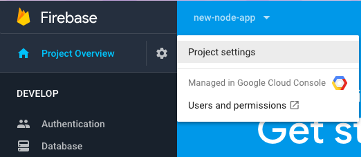
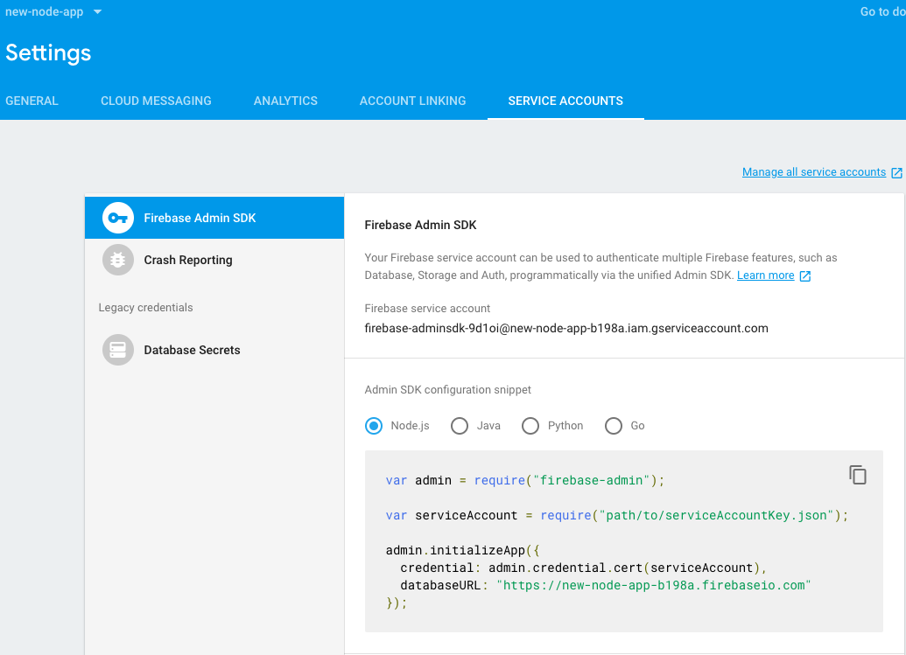

There you will see the databaseURL. Copy that into your project code.
Next click the Generate Key button.

Last week we created users for our app. This week we will start connecting the users to our database.
In order to securely connect a user, we need to verify the user on the server side. To do that we need to set up the Firebase Admin and authentication tools.
Start by installing the Firebase Admin.
$ npm install --save firebase-adminAdd that to server.js with other packages.
const admin = require('firebase-admin');We need to then initialize the Firebase admin.
const firebaseAdmin = admin.initializeApp({
credential: admin.credential.cert(serviceAccount),
databaseURL: ''
});We'll get the databaseURL shortly.
Next we're going to create a
In Express, middleware is basically functions that are used in the middle of request and resopnse. They have access to those values but do not render a resopnse.
Instead, they call next to return to the route.
Our Firebase Admin middleware is called isAuthenticated.
function isAuthenticated(request, response, next) {
}We use this to restrict access from non-authenticated users to the parts of our application that access the database.
Our app is going to allow users to make posts (like tweets). We will create a '/post' route that requires authentication.
app.get('/post', isAuthenticated, function(request, resopnse){
response.render('post.ejs');
});Notice that isAuthenticated is inserted into the route arguments.
Now we need to get some info from the Firebase Console to make authentication work.
Return to console.firebase.google.com and open the project you created.
From there go to Project Overview > Settings
From there click on "Service Accounts".
There you will see the databaseURL. Copy that into your project code.
Next click the Generate Key button.
This will download a json file with your authentication key inside it.
Do not share this information with anyone or commit it to a public repo! This is how you authenticate requests to your Firebase project and database.
Move that files to your project and copy the name of it into the line const serviceAccount = require(''); starting with ./
Now to set this up on the client side. On home.ejs we will add a link to the '/post' page. To authenticate the user we will pass a uid from Firebase to tell the server the user is logged in.
We need to use a <form> element to pass the uid.
<form method="GET" action="/post">
<input type="hidden" name="user" id="userInput">
<input type="submit" value="Write a new post">
</form>In JavaScript we can get the uid from the user user object:
if (user) {
console.log('user', user);
const userInput = document.getElementById("userInput");
userInput.value = user.uid;
} In the form the user value is hidden because the user doesn't need to see it or interact with it for it to work.
When the user clicks the button to add a new post it will pass the uid as a parameter into the isAuthenticated function:
function isAuthenticated(request, response, next) {
const uid = request.query.uid;
firebaseAdmin.auth().getUser(uid)
.then(function(user){
next();
})
.catch(function(error){
response.redirect('/');
});
}If the user exists, we go to the post page. If not, redirect the user back to the home page. You could also send them to a login or create user page or return a message asking them to login.
There is more authentication that could happen here, for example looking at the emailVerified field or using a custom token. For now we just want to go over the basics, we can add more security if we have time later in the semester.
You may be wondering at this point how the user stays signed in when the page is reloaded.
We wrote some code to allow the user to create an account, login and logout, and used some Firebase code to log the user when those events occur, but if we reload the page, that code shows the user info before the user actually does anything.
Firebase employs a feature of the browser called localStorage to keep the user logged in. localStorage is a simple local database where web pages can store information to access later that is only used for that specific user.
You can view localStorage by going to the localhost:8000 address with a piece of data stored that starts with firebase:authUser. Select this and you will see the data stored inside in the inspector window below.
Now that our user is authenticated, they can make a new post, which we will add to the database.
Let's start by building post.ejs. To get started, simply make a copy of home.ejs in the views/ folder and rename it.
We can remove the form and links to /create and login as well as the signOut function and button.
Everything else should stay the same, and we'll add some HTML to make a post.
<div id="post">
<textarea id="post-text"></textarea>
<br>
<button onclick={savePost()}>Post</button>
</div>Next we'll make a function but first we have to set up the database in the Firebase Console.

In the Database tab, click "Get Started".
We can practice adding data manually here. Firebase is awesome because we can see how the data is structured and watch it update in real time.

That's where our data will appear. Let's also take a quick look at the Rules tab. This determines which users can access to read or write to the database.

Now we'll write some client side JavaScript to save a post.
We'll walk through each line in this code. The basic steps are to get the user id (uid), get a reference to the database, store the text entered by the user and the current date in the database.
function savePost() {
const uid = firebase.auth().currentUser.uid;
const db = firebase.database();
const ref = db.ref('/users/' + uid + '/posts');
const post = {
text: document.getElementById('post-text').value,
date: new Date().toString()
};
return postRef.push(post).key
}